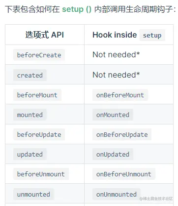

一、vue3基本使用的三个步骤
和vue2是一样的,vue3依然是渐进式的
1.1 引入vue3核心库
可以通过cdn分发网路或者本地引入全局构建版本 ,依然会向浏览器暴露一个全局对象Vue,与vue2不同的是,这个全局构建版本的所有顶层 API 都是以属性的形式暴露在了全局的 Vue 对象上。
除了全局构建版本还有 ES 模块构建版本,它是通过原生 ES 模块使用 Vue,我们主要使用它。
同时通过启用 Import maps 来告诉浏览器如何定位到导入的 vue。
1.2 创建Vue实例
和vue2不同的是,vue3不在通过new Vue()创建,而是通过Vue对象暴露出来的 createApp() 方法来Vue应用实例。
它和new Vue()一样接收一个对象,这个对象实际上是一个组件，每个应用都需要一个“根组件”，其他组件将作为其子组件。
如果使用的是单文件组件，我们可以直接从另一个文件中导入根组件。这也是常见的App组件传入方式
import { createApp } from 'vue'
// 从一个单文件组件中导入根组件
import App from './App.vue'
const app = createApp(App)
这个对象里面就是各种选项,但是如果还是像vue2一样使用选项api就丧失了vue3更新迭代的意义。
所以我们要使用vue3的组合式api,而在无需构建工具的情况下使用组合式api就要使用 setup() 选项。
在使用构建工具时 都是使用 script setup 语法糖的形式使用组合式api那将非常的方便。
1.3 挂载vue实例
和vue2一样,vue3应用实例创建后也必须调用 mount() 方法挂载后才会渲染出来。
该方法接收一个“容器”参数，可以是一个实际的 DOM 元素或是一个 CSS 选择器字符串。
应用根组件的内容将会被渲染在容器元素里面,容器元素自己将不会被视为应用的一部分。
需要注意的是它的返回值是传入的根组件实例而非应用实例。
同时当根组件没有设置 template 选项时,Vue 将自动使用容器的 innerHTML 作为模板。
二、vue3配置
2.1 应用实例的api
和vue2不同的是,全局api不再挂载在Vue构造之下,而是挂载在vue应用实例app下。
比如之前常见的api ===> 变成app实例上的方法api
Vue.directive ---- app.directive()
Vue.component ---- app.component()
Vue.use ---- app.use()
Vue.mixin ---- app.mixin() 这个api不推荐使用,在vue3主要是为了向后兼容。
Vue.version ---- app.version
Vue.config ---- app.config
还有一些在vue2是选项方法的,在vue3中挂载到了app实例上的方法
app.mount() 将应用实例挂载在一个容器元素中,参数可以是一个实际的 DOM 元素或一个 CSS 选择器 (使用第一个匹配到的元素)。返回根组件的实例。
对于每个应用实例，mount() 仅能调用一次。
app.unmount() 卸载一个已挂载的应用实例。卸载一个应用会触发该应用组件树内所有组件的卸载生命周期钩子。
app.provide() 提供一个值，可以在应用中的所有后代组件中注入使用。
还有一些是不再挂载而是作为通用工具方法使用
Vue.nextTick() ---- nextTick() 等待下一次 DOM 更新刷新的工具方法。
2.2 组合式api
vue3不再像vue2一样使用选项式api,而是使用组合式api。使用构建工具在单文件组件中使用组合式api开发是非常方便的。
而在不使用构建工具时 setup()钩子函数是使用组合式api的入口,当然实际项目我们都是使用SFC的setup 语法题。
createApp({
setup() {
// 这里使用响应式api声明数据
// 返回值会暴露给模板、组件实例和其他的选项式 API 钩子
return {
.....
}
},
})
但是需要注意的是setup()自身并不含对组件实例的访问权,也就是没有this。但是在选项式 API 中访问组合式 API 暴露的值。
三、vue3生命周期
和vue2的生命周期相比,在创建阶段的两个钩子被移除了,可以说是用setup()钩子替代了。
在销毁阶段两个钩子函数改名。所以可以说只剩下三个过程：挂载、更新、卸载。又分成六个状态：挂载前、挂载完成、更新前、更新完成、卸载前、卸载完成。
其它还和之前一样,只不过钩子函数名字都加上前缀 on。
区别如下：
选项式api 组合式api
beforeCreate 移除 在实例初始化之后、进行数据侦听和事件/侦听器的配置之前同步调用
created 移除 在实例创建完成后被立即同步调用
beforeMount onBeforeMount() 在挂载开始之前被调用
mounted onMounted() 在实例挂载完成后被调用
beforeUpdate onBeforeUpdate() 在数据发生改变后，DOM 被更新之前被调用
updated onUpdated() 在数据更改导致的虚拟 DOM 重新渲染和更新完毕之后被调用
beforeDestroy onBeforeUnmount() 在卸载组件实例之前调用
destroyed onUnmounted() 在卸载组件实例后调用
